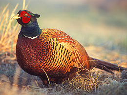
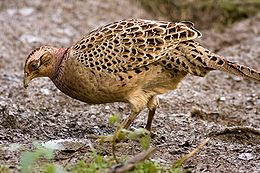
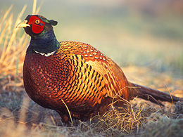
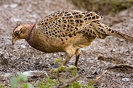

| Common Pheasant | |
|---|---|
|  | |
| Male of hybrid stock in Poland Note thin white neck-band due to a ring-necked subspecies' contribution to hybrid gene pool |
|
|  | |
| Female in England | |
| Conservation status | |
| Binomial name | |
| Phasianus colchicus Linnaeus, 1758 |
| Common Pheasant | |
|---|---|
|  | |
| Male of hybrid stock in Poland Note thin white neck-band due to a ring-necked subspecies' contribution to hybrid gene pool |
|
|  | |
| Female in England | |
| Conservation status | |
| Binomial name | |
| Phasianus colchicus Linnaeus, 1758 |
The Common Pheasant (Phasianus colchicus), is a bird in the pheasant family (Phasianidae). It is native to Caucasus and Russia and has been widely introduced elsewhere as a game bird. In parts of its range, namely in places where none of its relatives occur such as in Europe (where it is naturalized), it is simply known as the "pheasant". "Ring-necked Pheasant" is a collective name for a number of subspecies and their crossbreeds. As of 2005, it has the smallest known genome of all living amniotes, only 0.97 pg (970 million base pairs).[1]
It is a well-known gamebird, among those of more than regional importance perhaps the most widespread and ancient one in the whole world. The Common Pheasant is one of the world's most hunted birds;[2] it has been introduced for that purpose to many regions, and is also common on game farms where it is commercially bred. Ring-necked Pheasants in particular are commonly bred and were introduced to many parts of the world; the game farm stock, though no distinct breeds have been developed yet, can be considered semi-domesticated. The Ring-necked Pheasant is the state bird of South Dakota, one of only three US state birds that is not a species native to the United States.
The Green Pheasant (P. versicolor) of Japan is sometimes placed as subspecies within the Common Pheasant. Though the species produce fertile hybrids wherever they coexist, this is simply a typical feature among Galloanseres, in which postzygotic isolating mechanisms are slight compared to most other birds. The species apparently have somewhat different ecological requirements and at least in its typical habitat the Green outcompetes the Common Pheasant; its introduction to Japan has therefore largely failed.

.jpg){kind=link}
{kind=link}